Shake Junt isn’t about griptape.
The griptape is just an excuse to go have a skate session with your friends. And that’s often just a facade for hanging out, getting faded, and joking around.
Shake Junt is about love and homies and hype and hijinx and hanging out and everyone just happens to be great at skateboarding so let’s make a skate video and maybe some shirts and suddenly Shane Heyl is a really, really successful skateboarding entrepreneur.
4Ply diligently tracked all the non-skate clip footage in Shake Junt’s recent Shrimp Blunt video. From the first slap-slap-dap to the final toke of reefer.
Methodology
Pretty much just straight up tallying here. We noted what was happening in each interstitial clip that didn’t feature skateboard riding. This generally broke down into victorious expressions of stoke, props to the homies, smoking weed, and general gesticulating directly to the camera (which we deemed “Muggin”). There was some overlap in our data as occasionally single clips contained multiple tracked components.

For example, this celebratory clip featured a slap-slap-dap to product logo display accompanied by a shrimp blunt animation to assisted muggin for the camera. Impressive.
On Intros and Epilogues
Over one fifth of the nearly 50 minutes run time of Shrimp Blunt is dedicated to bumpers, intro skits, title sequences, a cook-out epilogue, and then slowly narrated credits.
Intros include semi-antimated brand bumpers for the Hijinx Net youtube channel, Goat Mouf Productions, and Shake Junt itself. We also have a tribute to Murdy the dog and then the psychotically brilliant video intro skit and dance sequence with Beagleoneism and weed molecules being sautrated in shrimp. As connoisseurs of skate video skits, 4Ply is confident ranking this one towards the top.
All said and done, we're over 8% of they way through the video before we any actual skateboarding occurs.
And the Ending sequences - consisting of the backyard Shrimp Blunt cook-out and the scrolling credits - are even longer, making up over 12% total running time. Completely worth the time commitment just to see Antwuan reprise "Eat that shrimp."
Non-skate clips
When the Intro-Outro bookends are factored out, the ‘skate portion’ of Shrimp Blunt clocks in at a still impressive 38-minute-40-second of continuous mixtape.
Some back-of-the-envelope totals have us at approximately 140 intercut non-skate events happening thoughout the video.
This gives us a B-roll clip of some kind every 15 seconds or less. Even with our contempoary skate full length tolerance for high-fives and hugs at a high level, 140 is a lot of nonsense for a skate video. Exactly how is this endurable?
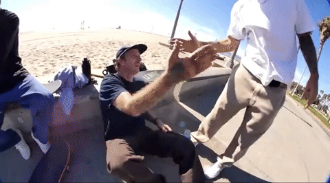
The first reason is simple precedence. Beagle and his Baker Boys brethren have built a distinct video style around non-skate clips. So much so that he has literally named his video productions after his moniker for kinds of clips: Hijinx. If it's gonna be a Shake Junt video, there's gonna be a lot of shennanigans.
Second, as any sprawling griptape team video should be, the entirity of Shrimp Blunt is pretty much a front-to-back "Friends" section. So most of the non-skate clips typically served as a type of introduction or transition between each of the six dozen featured skaters.
CRUSHING NUMBERS:
- Number of Shake Junt Slap-Slap-Daps: 41
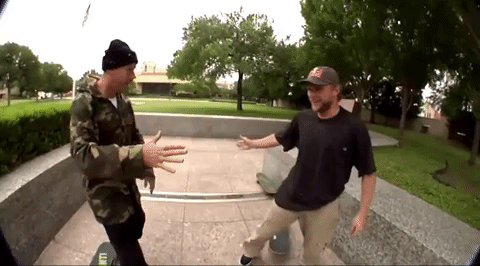
- Shots of Smoking Weed: 26 (not including intros and cook-out scene)
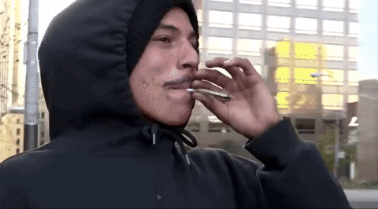
- Beers: Surprisingly, only 3
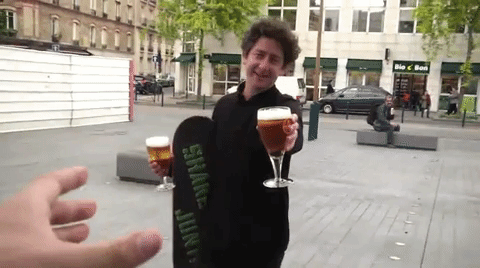
- Shirmp Blunt Animations popping up on screen: 13
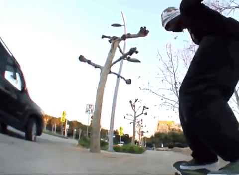
- Hugs: 9
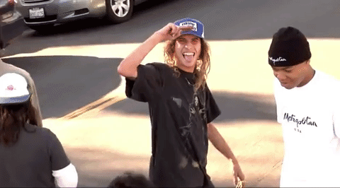
- Other gestures: 10 (high fives, tagging, lighting cigarettes, dancing, puking, etc.)
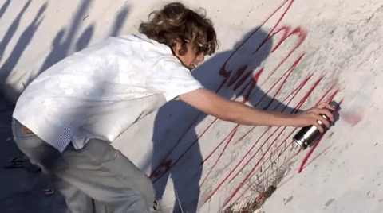
- Muggin’ at the Camera: 32
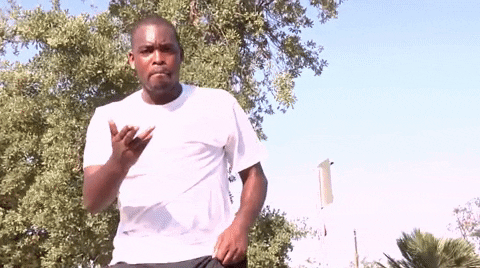
- Showing off the Logo on Product: 11
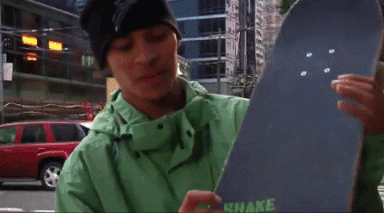
- Heyl gets Hyped: 13
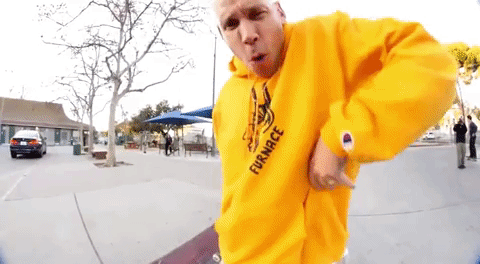
Slam Section Stats:
54 Slams
16 Camera hits
2 camera operator slams
3 ankle rolls
3 fights
5 tantrums (including the bratty kid and that guy with his bike)

Bonus Blunts
Check out the origins of the Shrimp Blunt (featuring Herman on shrooms and the ghost of Pimp C), as told by Beagleoneism on the old Free Lunch show.
Huge shout out to Shane, Beagle, and everyone involved with Shrimp Blunt. We loved every fist bumping minute of it. We're still sitting on the data for Beagle's entire skate career so hit us up for the interview so we can do this thing, dude.
Follow 4Ply at @4plymag on the gram and on Twitter and put some shrimp on that blunt!
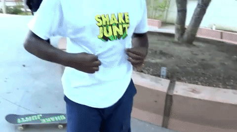